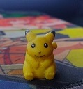

Primer ingreso

De los primeros recuerdos que tengo de mi niñez, un pikachu que me regalo mi abuela por los 2000
De los primeros recuerdos que tengo de mi niñez, un pikachu que me regalo mi abuela por los 2000
Una de mis mas grandes adquisiciones y lo mejor de la comiccon 2023